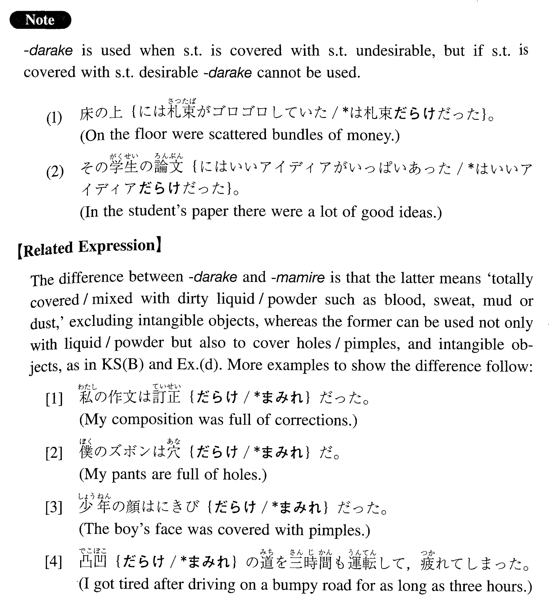

←
DoJG
→
だらけ
(I. 25)
Example sentences
(ksa).
スミスさんはいつも泥
だらけ
の靴を履いています。
Mr. Smith is always wearing shoes covered with mud.
(ksb).
この作文は間違い
だらけ
です。
This composition is full of mistakes.
(a).
長いこと掃除をしていなかったらしく、床も机の上もほこり
だらけ
だった。
Apparently they have not cleaned the room for a long time and the floor and the tables were covered with dust.
(b).
病院に担ぎ込んだ時、その男の顔は血
だらけ
だった。
When we carried him into the hospital, the man's face was covered with blood.
(c).
泥
だらけ
の足で入って来ないで。
Don't come in with muddy feet.
(d).
借金
だらけ
の生活をしています。
I am living a life with many debts.
(e).
この貝は砂
だらけ
で食べにくい。
This seashell contains a lot of sand, so eating is difficult.
Formation
(i)
Noun
1
だらけの
Noun
2
ごみ
だらけの
部屋
A room filled with rubbish
(ii)
Noun
1
はNoun
2
だらけだ
部屋はごみ
だらけだ
The room is full of rubbish
